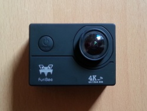
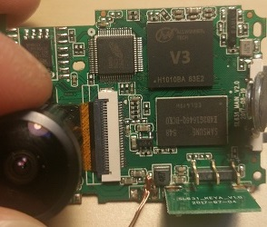

Furibee F60, czyli tania kamerka sportowa, będąca klonem jakiegoś tam SJCAM'a, z dość ciekawymi bebechami, albowiem kryje się w niej Allwinner V3 (opis procesora wg producenta) została kupiona przeze mnie około 2018 roku. Minęły 2 lata, zanim odkryłem, że jest ona wykrywana przez ADB, co zresztą stało się przypadkiem. Udało mi się zdumpować część pamięci wewnętrzenej na dysk, i jak się okazało, siedzi tam Camdroid OS, czyli bardzo lekka wersja Androida na co wskazywałyby pliki BUILD i nie tylko, o których będzie co nieco potem.


Ziemianie już kilka lat temu rozgryźli tą marną konstrukcję, co zresztą pokazuje ten 19-sto stronicowy wątek na zagranicznym forum o kamerkach samochodowych. Napisano w nim m.in., że Camdroid OS zainstalowany na tym plastikowym chińskim pudle bazuje na Androidzie 4.2.2 z doinstalowanym MiniGUI jako interfejs graficzny. Jeśli chodzi o specyfikację, to nasz ARM Cortex-A7 taktuje do 1.2GHz, operuje 128MB DRAM'u DDR3? o taktowaniu do 800MHz i ma do dyspozycji 32MB pamięci eMMC, podzielonej na 8 partycji. Na pokładzie znajduje się również układ scalony odpowiedzialny za bezprzewodowe połączenie WLAN o oznaczeniu XR819.
Pobieramy ADB, wypakowujemy folder i w wypakowanym folderze otwieramy cmd lub inną konsolę. Podłączamy naszą kamerkę do komputera, i wybieramy tryb ładowania (w innych też zadziała). Wchodzimy w okno konsoli i wpisujemy adb devices. Jeśli pokazuje się jakieś ID/data i po tym device, np 20080411 device, to znaczy, że komputer wykrywa kamerę i możemy przejść dalej. Żeby już w końcu wejść do naszego systemu wpisujemy adb shell. W ten sposób mamy dostęp do konsoli kamery, oraz dostajemy uprawnienia root'a.
Pora zabrać się za konkrety, czyli chociażby partycje na naszej pamięci ?eMMC?.
root@camdroid:/ # cat /proc/mtd dev: size erasesize name mtd0: 00040000 00001000 "uboot" mtd1: 001c0000 00001000 "boot" mtd2: 004c0000 00001000 "system" mtd3: 00080000 00001000 "cfg" mtd4: 00010000 00001000 "boot_logo" mtd5: 00010000 00001000 "shutdown_logo" mtd6: 00010000 00001000 "env" mtd7: 00008000 00001000 "private"No dobra, i co z tym zrobimy? W sumie to nic, taka teorytyczna wiedza nic nam nie da. Jednak ile finalnie mamy miejsca "na dysku" do której możemy się łatwo dostać? Sprawdźmy.
root@camdroid:/ # df
Filesystem Size Used Free Blksize
/dev 15M 32K 15M 4096
/system 4M 4M 0K 131072
/data 512K 56K 456K 4096
/mnt/extsd 28G 68M 28G 65536
Wychodzi na to, że wewnętrzna pamięć dostępna dla nas ma 20MB.root@camdroid:/ # tinyplay "/mnt/extsd/blog/kazdy ziom zbiera zlom.wav" Playing sample: 2 ch, 48000 hz, 16 bitPomimo bycia niesamowicie cichym i słabym głośnikiem piosenkę udało się odtworzyć.
iwconfig, znajdującego się w katalogu /system/bin/. Nasza kamerka ma ów program, dzięki czemu możemy podłączyć się do sieci bez zabezpieczeń lub z zabezpieczeniem WEP (WPA i WPA2 wymagają majstrowania w pliku /etc/wifi/wpa_supplicant.conf). Kolejno wprowadzone przeze mnie komendy w celu połączenia z nieszyfrowaną siecią "maalos":
iwlist scanning iwconfig wlan0 mode Managed iwconfig wlan0 essid maalosPo wprowadzeniu ostatniej komendy zostałem połączony z siecią.
https://licheeone.readthedocs.io/zh/latest/camdroid/camdroid_build.html
https://linux-sunxi.org/V3
https://www.allwinnertech.com/uploads/pdf/2016051514324557.pdf
https://linux-sunxi.org/images/f/f5/Allwinner_V3_Datasheet_V1.1.pdf
https://dashcamtalk.com/forum/threads/hacking-q3h-allwinner-v3-camdroid.20507/
https://www.datasheets360.com/part/detail/k4b2g1646q-bck0/804073935451964570/
https://linux-sunxi.org/images/8/8f/XR819_Datasheet_V1.0-EN.pdf
https://www.goprawn.com/forum/allwinner-cams/25-allwinner-v3-s-imx179-s-ov4689-and-gc2023-action-cameras